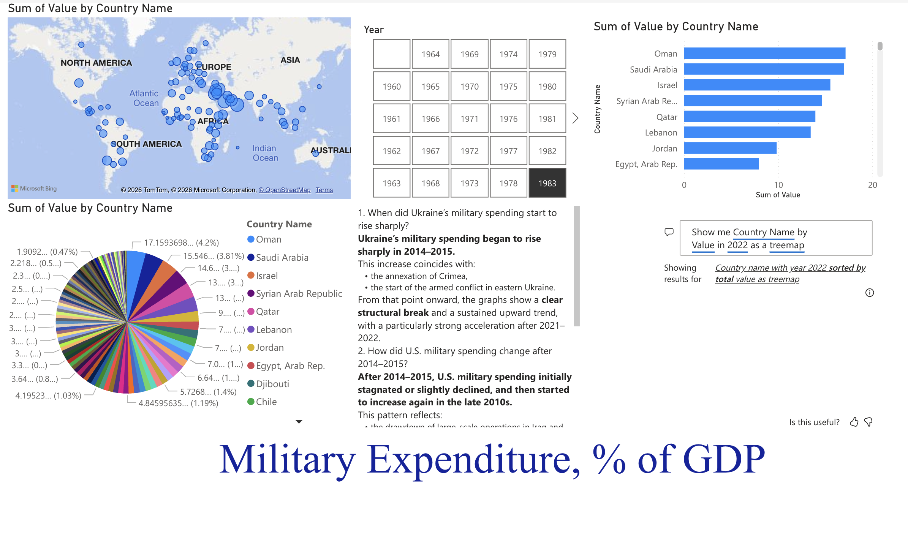
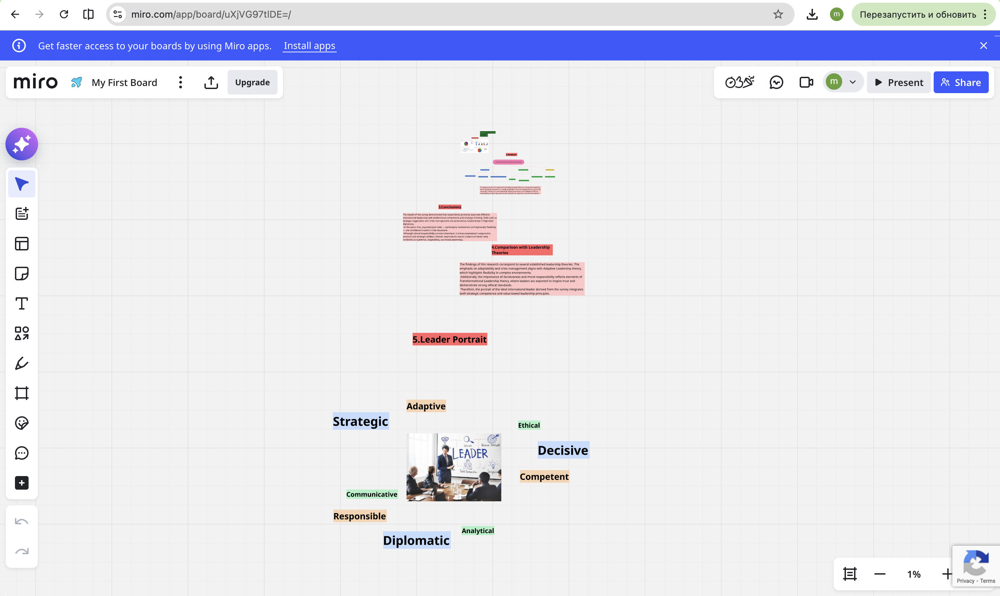

Projects &
Work

Military Expenditure % of GDP
Multi-visual Power BI dashboard analyzing global military spending as % of GDP across 100+ countries. World map, pie chart, bar chart ranking, and AI Q&A panel.

Ireland: Military & Economic Dashboard
Correlation analysis of military expenditure, high-tech exports, FDI inflows, and GDP growth in Ireland (1960–2024). Military Expenditure: 0.24% GDP. GDP Growth: 2.60% in 2024.

International Leader Portrait Analysis
Miro board mapping the ideal international leader profile. Core traits: Strategic, Adaptive, Ethical, Decisive, Competent, Communicative, Responsible, Diplomatic, Analytical.
Briefing Note: Paris Protest Security Assessment
Formal U.S. Department of State Briefing Note on security risks in Paris during government reform protests. OSINT monitoring, AI-based scenario forecasting, and diplomatic recommendations.
Briefing Note: Ireland Socio-Economic Developments
Diplomatic intelligence briefing on civic unrest in Ireland — agricultural protests, cost-of-living demonstrations, Shannon Airport proceedings. Forecast: low-intensity protracted instability.
Personal Portfolio Website
Designed and developed this full portfolio from scratch using HTML5, CSS3, and vanilla JavaScript. Scroll-reveal animations, responsive design, deployed on GitHub Pages.